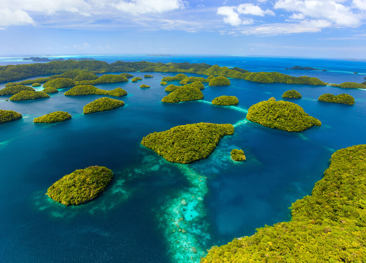
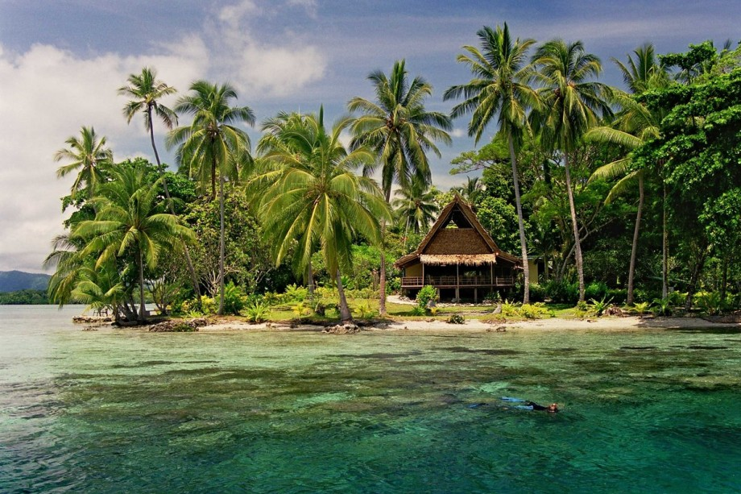

Вануату: Вогняний Острів
Вануату — це архіпелаг у Тихому океані, що складається з понад 80 островів. Він розташований приблизно за 1,750 км на схід від Австралії та за 500 км на південь від Соломонових Островів. Вануату відомий своїми вражаючими природними ландшафтами, включаючи тропічні ліси, вулкани, лагуни та красиві пляжі.
Природа
Природа Вануату вражає різноманітністю та красою. Архіпелаг складається з понад 80 островів, що пропонують унікальні ландшафти, флору та фауну. Вануату славиться гірськими масивами, тропічними лісами, пляжами з білим піском і кораловими рифами. На деяких островах, таких як Тана, розташовані активні вулкани, зокрема вулкан Танагу, який є одним із найактивніших у світі. Клімат Вануату тропічний, з вологим сезоном з листопада по квітень та сухим — з травня по жовтень, що сприяє зростанню тропічних рослин. На островах росте багато видів дерев, пальм, папоротей і квіткових рослин, серед яких є рідкісні види, що не зустрічаються в інших регіонах. Вануату є домом для багатьох тварин, зокрема птахів, ящірок і морських видів, таких як черепахи і риби. Острівна ізоляція сприяла розвитку унікальних видів, яких немає в інших частинах світу. Коралові рифи навколо архіпелагу є одними з найкрасивіших у світі, і дайвінг у цих рифах привертає туристів завдяки різноманіттю морського життя. Однак природа Вануату стикається з екологічними викликами, такими як зміни клімату, забруднення та руйнування природних середовищ існування. Країна активно працює над охороною навколишнього середовища та збереженням своїх природних ресурсів. Таким чином, природа Вануату — це унікальне поєднання тропічних ландшафтів, багатої флори та фауни, які роблять цю країну особливою в Тихоокеанському регіоні.
Культура та традиції
Культура та традиції Вануату є надзвичайно багатими і різноманітними, відображаючи унікальну історію та різноманітність етнічних груп, що населяють архіпелаг. Однією з ключових особливостей культури Вануату є його мовна різноманітність: на островах говорять більш ніж 100 мовами, що робить країну однією з найбільш мовно різноманітних у світі. Основною мовою є біле (Bislama), що є креольською мовою на основі англійської, а також використовуються англійська та французька мови. Традиційні звичаї і обряди займають центральне місце в житті фіджійців. Серед них — ритуали, що стосуються шлюбів, поховань та інших важливих подій у житті. Традиційні танці, музика та мистецтво є невід'ємною частиною культурної спадщини Вануату. Місцеві жителі часто виконують танці під час святкувань, що супроводжуються ритмічною музикою та барабанами. Вануату також славиться своєю системою "kastom" — традиційними правилами та звичаями, що регулюють соціальне життя, включаючи відносини між родинами, громадами та окремими особами. Ця система підкреслює важливість громади та зв'язків між людьми. Дуже важливу роль у культурі Вануату відіграє релігія. Більшість населення є християнами, але багато людей також дотримуються традиційних вірувань, що пов'язані з духами предків і природними силами. Ці вірування впливають на повсякденне життя і ритуали. Кулінарія Вануату також є важливою частиною культури. Місцеві страви часто включають свіжі морепродукти, фрукти, овочі, а також страви з коренеплодів, таких як ямс і таро. У цілому, культура та традиції Вануату є складним і багатошаровим сплавом традицій, вірувань і сучасності, які зберігають і передаються з покоління в покоління, роблячи цю країну унікальною в Тихоокеанському регіоні.
Історія
Історія Вануату має глибокі корені, які налічують тисячі років. Архіпелаг був заселений полінезійськими та меланезійськими народами приблизно 3,000 років тому. Ці ранні поселенці принесли сільське господарство, рибальство та традиційні ремесла, створивши різноманітні громади з унікальними культурами та звичаями. У 17 столітті європейські дослідники, такі як голландський мандрівник Якоб Ле Маір та іспанець Алаваро де Мендана, відкрили Вануату. Однак колонізація архіпелагу почалася лише в 19 столітті, коли Вануату потрапило під контроль Великої Британії та Франції. У 1906 році було утворено спільну колонію, відому як "Нью Гебриди". Цей період відзначався напруженістю між колонізаторами та зростанням впливу місіонерів, які приносили християнство та нові соціальні структури. Вануату здобуло незалежність 30 липня 1980 року після тривалої боротьби за самовизначення, що супроводжувалася підйомом національної свідомості та політичними кампаніями. Країна прийняла нову конституцію, яка закріпила права громадян і основи демократичного управління. Сьогодні Вануату є незалежною державою з парламентською системою. Однак країна стикається з економічними викликами, природними катастрофами та змінами клімату, які впливають на її розвиток. Попри ці труднощі, Вануату зберігає свою культурну спадщину, унікальність та природну красу, продовжуючи залучати туристів з усього світу.
Підсумок
Соломонові Острови — це острівна держава в Тихому океані, відзначена унікальною природою, багатою культурою та різноманіттям. Вони славляться ендемічними видами флори і фауни, тропічними лісами та кораловими рифами. Острови мають значну історію, зокрема участь у Другій світовій війні, і зберігають традиції, що передаються з покоління в покоління. Сучасне життя жителів поєднує традиційні цінності з сучасними впливами, проте вони стикаються з екологічними та соціальними викликами.